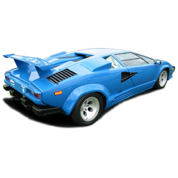

<!DOCTYPE html>
<html lang="en">
<head>
	<meta charset="UTF-8">
	<meta name="viewport" content="width=device-width, initial-scale=1.0">
	<title>Automobiles' constructor</title>
</head>
<body>
	<script src="https://code.jquery.com/jquery-2.1.0.js"></script>
	<script>
		//створюємо ко конструктор Car
		var Car = function (x, y) {
			this.x = x;
			this.y = y;
			this.speed = 5;
			this.draw();
			this.moveRight();
		};
		//новий метод, що зветься draw стає частиною усіх об'єктів що створив конструктор Car
		Car.prototype.draw = function () {
			var carHtml = '';
			//jQuery елемент зберігаємо як властивість об'єкта, присвоюючи до this.carElement
			this.carElement = $(carHtml);

			this.carElement.css({
				position: "absolute",
				left: this.x,
				top: this.y
			});

			$("body").append(this.carElement);
		};

		//додаємо метод moveright
		Car.prototype.moveRight = function () {
			this.x += this.speed;

			this.carElement.css({
				left: this.x,
				top: this.y
			});
		};

		Car.prototype.moveLeft = function () {
			this.x -= this.speed;

			this.carElement.css({
				left: this.x,
				top: this.y
			});
		};

		Car.prototype.moveUp = function () {
			this.y -= this.speed;

			this.carElement.css({
				left: this.x,
				top: this.y
			});
		};

		Car.prototype.moveDown = function () {
			this.y += this.speed;

			this.carElement.css({
				left: this.x,
				top: this.y
			});
		};

		var tesla = new Car(20, 20);
		var nissan = new Car(100, 200);
		//запускаємо функцію drawCar з різними параметрами

		console.log(tesla.x);

	</script>
</body>
</html>